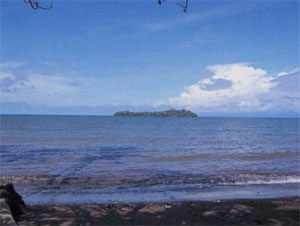

|
第４１ 砂浜に陣没者を埋葬
 今日もまた、田中上等兵が病気と飢餓のため死んだ。 一方、海岸には砂浜があり、山側には高いヤシの木が、海岸に沿って茂っていた。夕方になって少し風が吹いてきた。そ してあたりも薄暗くなってきた。この時刻になると、敵の飛行機も魚雷艇も襲撃して来ない。最も安全な時刻である。私 は朝の点呼時に、墓穴を掘るように命令しておいたが、夕方陽が没して薄暗くなってから、遺体を横に置いて僅かに地面 の下に隠れる位の浅い穴が掘りあがっていた。皆で、故田中上等兵の遺体を運び墓穴に横たえ、頭を日本の方に向けて、 皆で遺体に砂をかけ、私が念仏を唱え葬式は終った。波の音がかすかに聞こえてくる。式が終った頃は空はすっかり暗くなっていた。とうとう今日もまた、一日が過ぎていった。 暗くなると、今度は敵の魚雷艇が海上を横行する。我々は海岸線から少し離れた、ジャングルの中で息をひそめて野営 した。夜空を仰いでも、星は見えない。今日はなんとか生き延びたが、明日のことは誰にも分からない。皆は昼間のこと で疲れ果てて良く眠っている。眠っている時だけが極楽です。しばし戦争の事は忘れて安眠をむさぼり続けました。田中 上等兵を埋葬したのは昭和２０年２月頃の事でしたが、彼を埋葬した場所は何処だったか忘れてしまった。が、見晴らし のよい所だった。ここから、約５０００キロメートル離れた海の彼方には祖国日本がある。彼は望郷の念にさいなまれ、家族 を思いながらニユーギニアの土になってしまった。ご冥福を祈ります。（１９４５年２月頃の話） |